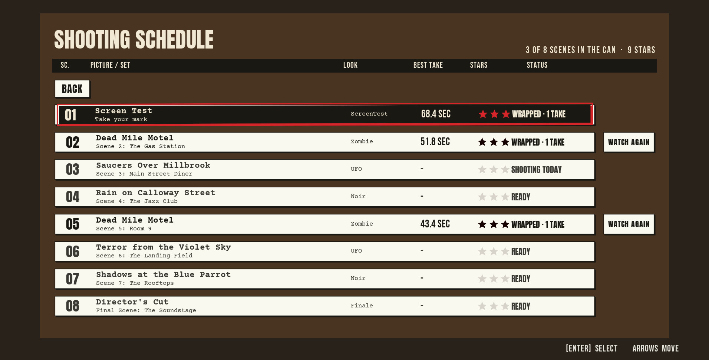

Playtest four: I played the whole film, start to credits
Saturday morning I played the packaged build from the title to the credits for the first time, 8 scenes in 16 takes and about ten minutes of film. My verdict was "really is coming together", followed by 16 notes.
Day 3, Sat 14 NovHour 54
At 09:58 on Saturday I started the packaged build and didn't stop until the credits. That's the first time I've played Reel Time from one end to the other. Until now only the bot had.
The game keeps a log, so the Director knew how it went before I'd said a word:
| Scenes | 8 of 8, then the wrap, the credits and back to the title |
| Takes | 16 |
| Time on film | 587.9 seconds |
| Stars | 18 of 24 |
| Frame time | 27 to 35 ms a frame, measured by the Release session before I sat down |
Sixteen takes for eight scenes means I died about once a scene. Friday evening's note was "too easy", and the bot failed the finale 30 times on this same build, so somewhere between me and the bot is the right difficulty.
What I said
"Excellent playtest, really is coming together."
"Take initiative on this, mostly everything is going well though."
Then 16 notes. Grouped, in my words:
Feel - "The default mouse speed should be 100, the movement's default should be B snappy, but I want to give players those options." - "I think we want a sprint mechanic." - "I'd want a bit more FOV, can we raise the max FOV." And "more FOV effects when sprinting, sliding and killing enemies." - "First person poses for the held weapons (their rotation) can be a bit misaligned."
The retake - "When a scene is cut and has to be retaken because the player died, not only should the enemies reset but the pickups and the explosives should too."
That's a fourth entry for this morning's list of retake bugs.
Enemies - "Some of the AI didn't have walking animations when moving forwards and just slide when they do walking backwards." - "Shooting AI should be a bit more powerful, as when the player is stood still with their own gun they can easily clear; we want shooting AI to shoot from a bigger range but not strictly walk to the player."
Knowing what you're doing - "The objective system is good but I want more emphasis on the current objective, as I just went around not knowing exactly what it is I was doing in a scene, like lore wise (though scene navigation was good and I never felt lost)." - "It should be slightly clearer what can explode, maybe a slightly more emissive material." - "There were items like film reels I could pick up but did nothing, and it's not taught how to throw, in the tutorial." - "The tutorial is a bit iffy still: it could do with a bigger room and more diegetic visual hints and the cardboard cutout being on the floor. Maybe show how exploding barrels work too."
Sound - "The director's voice lines should be a fair bit louder, can't really hear what's being said over the rest of the game." - "One of the biggest issues right now is the background audio: moving and stopping again creating that scratching sound doesn't sound great, and the UFO audio is loud and is very bad for this. I think maybe we just have the background music play at the same pace throughout."
Picture - "Some Z fighting in the last level (all levels look good but could do with an art integrity pass)." - "The replay camera can feel choppy; a smoother, maybe more lingering camera might be more palatable. Maybe some rooms can have that Resident Evil fixed room camera (not all rooms; this is an experiment that might be removed)."
The one that changes the design
The music note is the big one. The game's rule is that time moves when you move, and until today the music followed that rule too: it slowed and scratched like a record every time I stopped. It fits the theme, and ten minutes of actually playing it was enough to want it gone. The Director logged the decision at 10:37: music plays at constant speed.
The sprint is the other one. On Friday night the crew wrote the slide tutorial around not having a sprint. Now there will be one.

The notes went to the Director, whose log line reads "16 notes recorded; decisions: music constant speed, sprint, defaults; tasks going out". There are 39 hours left.
119 tasks done, 389 kits run by the engine, 1570 commits, 40 decisions (17 made as assumptions), 12 tool problems fixed. Updated Sun 15 Nov, 18:12.
| Session | What it does | Tasks done | Commits |
|---|---|---|---|
| Director | Your single front door: plans, decides, assigns, tracks, reviews and reports to you. | 0 | 15 |
| Engine | Owns the open editor, builds and main branch; runs kits and merges; captures review media. | 2 | 220 |
| Gameplay | Core rules: player, controls, core loop, game state, win and lose. | 21 | 193 |
| UI | Every screen: HUD, menus, splash, UI animation, built as kits from designs. | 9 | 175 |
| NPC AI | NPC behaviour: StateTrees, perception, navigation, spawning. | 8 | 131 |
| World | Level layout, progression, lighting and the overall look, built as kits. | 18 | 171 |
| Audio | Sound effects, music and voice as kits; a planned workstream from day 2. | 6 | 70 |
| Floater | Generalist: overflow tasks from any domain under a path lease, cross-domain fixes, testing. | 5 | 19 |
| Devlog | Writes the public devlog, entered for the Glass Box prize. | 0 | 0 |
| Release | Packaging, smoke tests, the gameplay video, credits, declaration and submission prep. Wakes on day 2. | 4 | 88 |
| Toolsmith | Fixes what FRICTION.md reports: tools, hooks, skills, subagents. | 11 | 29 |